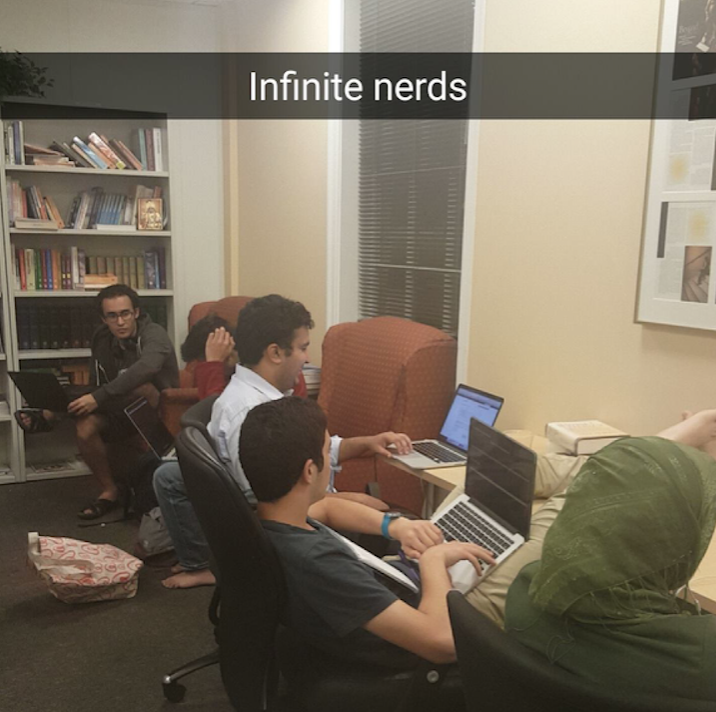

Inspect other partitions
File type: .txt
When I left my tangerines in OU Fahim brought them back to me in Mirrielees... and suffered through bike class with me... and helped book the GCC for the Farewell Banquet too.
File type: .txt
Fahim would always reply to my exam/school related snaps with good luck messages.
File type: .txt
HE ALWAYS PUTS AWAY THE CHAIRS AFTER JUMMUAH!
File type: .txt
Fahim walked me to Mirrielees when I didn't have my bike after basketball.
File type: .txt
He once got me food from med wraps! I was starving that day.
File type: .txt
Fahim would come to basically every MSU event. He was practically a MSU officer.
File type: .txt
Just being invited to the dinner tonight... like that means a lot given I only started talking to Fahim last quarter.
File type: .img
